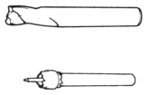
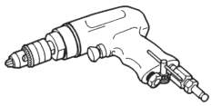
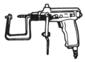
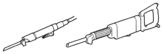
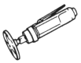
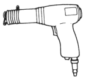
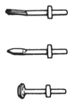
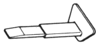

SPOT CUTTER
Install the spot cutter in the air drill, and drill a hole at the spot weld nugget and the plug to make the hole.

AIR DRILL
The rotation speed can be adjusted, and an adequate hole opening can work.

PRESSURE DRILL
The depth of the hole can be adjusted, and only necessary plate thickness can puncture.

CENTRE PUNCH
When an accurate hole opening is necessary.
AIRSAW
Cut the outer panel.

AIR CHUCK GRINDER
Detaching the MIG welding part and the panel can be cut by installing cut grinding wheel in air chuck grinder.

AIR IMPACT CUTTER
Cut the outer panel roughly.

CHISEL SET

SPOT WELD CUTTER
Pry off the spot welded flange.

HAND NIBBLER